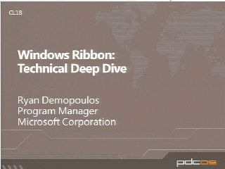
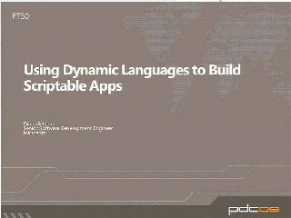
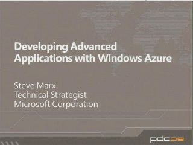

The Professional Developers Conference (PDC) is the definitive event focused on the technical strategy of the Microsoft developer platform. Attendees come from around the world to learn about the future of Microsoft developer technology directly from the people who make it happen. If you’re a developer, architect or technology leader involved in making strategic technology decisions, the PDC is for you.
Day 2 Keynote [WMV] [2009/11/20]
[WMV] [2009/11/20]Watch the day 2 keynote at the 2009 Professional Developers Conference with Steven Sinofsky, Scott Guthrie and Kurt DelBene.
Improving and Extending the Sandbox with Microsoft Silverlight 4[WMV] [2009/11/19]Explore enhancements to the app experience, the ability to host HTML content within Silverlight, and playback rights-protected media when offline. Get details on the new extensions to the sandbox that…
Building Line of Business Applications with Microsoft Silverlight 4[WMV] [2009/11/19]Learn about enhancements to data binding and data validation as well as new support for rich text & printing in the platform that allow you to build compelling LOB user experiences. In addition, you…
Day 1 Keynote[MP4] [2:02:33] [2009/11/18]Watch Ray Ozzie, Chief Software Architect, and Bob Muglia, President of the Server and Tools Business, in their day 1 keynote at the 2009 Professional Developers Conference where they describe…
Developing PHP and MySQL Applications with Windows Azure[WMV] [2009/11/18]Come learn how to build rich, multi-tier applications in the cloud using PHP and MySQL, taking advantage of new Windows Azure features. This session will cover using PHP, MySQL, and memcached in…
Enrich your Applications with Data from Microsoft Project Code Name Dallas[WMV] [2009/11/18]With the announcement of “Dallas” during the PDC Keynote many developers are probably asking themselves how can they take advantage of this powerful new service. In this session we will cover the…
Building Java Applications with Windows Azure[WMV] [2009/11/18]Come learn how to build large-scale applications in the cloud using Java, taking advantage of new Windows Azure features. This session will cover using Apache Tomcat and Java in Windows Azure.
[WKSP02]
[WKSP01]
[WKSP00]
A Lap Around Microsoft Visual Studio and Team Foundation Server 2010[WMV] [2009/11/14]Come learn how Visual Studio advances developer productivity with new tools for application debugging, and designers for key technologies such as Sharepoint. See how the new modeling tools allow you…
[BOF108]
[BOF111]
[BOF107]
[BOF109]
[BOF104]
[BOF110]
[BOF101]
[BOF203]
[BOF102]
[BOF201]
[BOF103]
[BOF106]
[BOF105]
[BOF202]
Deep Dive on Bing Maps Silverlight Control[WMV] [2009/11/12]The Bing Maps Platform has grown immensely over the past year from our Bing Maps AJAX Map Control to our Bing Maps Web Services and now our Bing Maps Silverlight Control. Come and join us as we take…
Windows 7 and Windows Server 2008 R2 Kernel Changes (Continued from 1:30 Session)[WMV] [2009/11/12]Come explore beneath the hood of Windows 7 and Windows Server 2008 R2, and learn about the key changes in the kernel. Topics include: scalability improvements, security improvements, power efficiency…
Unleashing the Power of Excel on the Web[WMV] [2009/11/12]Microsoft Excel workbooks are everywhere, and they are a mini-database, a data-layer, a visual designer, and a programming language all packed into a single technology. Microsoft Office 2010…
Building Location Aware Applications with the SQL Server Spatial Library[WMV] [2009/11/12]Did you know that the new SQL Server 2008 Spatial Types are available in a redistributable library? This library can be used to build interesting location aware functionality in applications that…
Build a .NET Business Application in 60 Minutes with xRM and SharePoint[WMV] [2009/11/12]You know the Web Services let you quickly build interoperable applications; come see how quickly as we use the business application building capabilities of Microsoft Dynamics CRM and SharePoint to…
A New Approach to Exploring Information on the Web[WMV] [2009/11/12]Come hear Gary Flake talk for the first time about a Microsoft Live Labs experiment that is exploring new ways to organize, access and experience large amounts of information on the web. See examples…
Tips and Tricks for Using Visual Studio 2010 to Build Applications that Run on Windows Azure[WMV] [2009/11/10]A platform is only as powerful as the tools that let you build applications for it. This session focuses on using demos, not slides, to show the best way to use Visual Studio 2010 to develop Windows…
The Business of Windows Azure: What you should know about Windows Azure Platform pricing and SLAs[WMV] [2009/11/10]As a developer, when building cloud applications you now have the ability to directly impact the cost for running your application. In this session, learn about the Windows Azure Platform pricing…
[PR32]
Introduction to Building Applications with Windows Azure[WMV] [2009/11/10]In this demo-heavy session, learn how to easily write a applications from scratch on Windows Azure using Visual Studio 2010. The entirety of the development lifecycle will be shown from initial…
ASP.NET MVC 2: Ninjas Still on Fire Black Belt Tips[WMV] [2009/11/10]Having the customer on your back to deliver features on time and under budget with tight deadlines can make you feel like you’re being chased by ninjas on fire. Join Scott Hanselman and he’ll walk…
Microsoft ASP.NET 4 Core Runtime for Web Developers[WMV] [2009/11/10]Come find out how ASP.NET 4 runtime improvements make building ASP.NET applications faster, easier and better than ever. See how to better manage web server resources with improved resource…
Whats New in Microsoft ASP.NET 4 Web Forms and Dynamic Data[WMV] [2009/11/10]Come hear how to improve productivity while getting more control over building web applications including handling element id’s, using CSS styling, getting finer control over ViewState and controlling…
New Developer Tools in Windows Embedded Standard 2011[WMV] [2009/10/30]See how Windows Embedded Standard 2011 fuses the power and functionality of Windows 7 with the flexibility and workflow needed for the embedded developer to make devices come to life. Discover 2…
Windows Error Reporting[WMV] [2009/10/28]Learn how to create a positive customer experience by using the Windows Error Reporting (WER) platform. See how WER provides mechanisms to communicate directly with customers who are experiencing…
Microsoft adPlatform Opportunities for Developers[WMV] [2009/10/28]Come hear about the advertising opportunities open to developers. Get an overview of the core components of the Microsoft Advertising Platform, how they fit together, and how to use them to build your…
Web Deployment Painkillers: Microsoft Visual Studio 2010 & MS Deploy[WMV] [2009/10/28]Learn about next generation of ASP.NET Web Deployment with tips & guidance on how you can reuse and extend the technologies available with VS 2010 to build a hassle free web deployment solution for…
SQL Azure Database: Present and Future[WMV] [2009/10/28]Learn how SQL Azure has evolved and what new capabilities are planned for upcoming versions. Hear about future RDBMS capabilities in the Cloud and the integration of SQL Azure with other services.
Multi-Touch on Microsoft Surface and Windows 7 for .NET Developers[WMV] [2009/10/28]Multi-touch is going mainstream as part of Microsoft Surface and Windows 7. Come to this session to learn about how to create innovative new user experiences with touch – and how .NET developers can…
Media Foundation: Supporting Hardware Codecs and Cameras[WMV] [2009/10/28]Hear how Windows 7 adds support in native code for accelerating media transcoding and specific playback experiences through the new asynchronous Media Foundation transform (MFT) model. Learn how to…
Mastering WPF Graphics and Beyond[WMV] [2009/10/28]Learn how to take advantage of the latest graphics features in WPF to build polished, responsive applications. See examples of how to boost the visual sharpness of your applications, how to take full…
Lessons Learned: Building Scalable Applications with the Windows Azure Platform[WMV] [2009/10/28]Come hear from RiskMetrics and Thuzi; two early adopters that have developed highly scalable applications using the Windows Azure Platform. Hear them share their application architecture, lessons…
Lessons Learned: Building On-Premises and Cloud Applications with the Service Bus and Windows Azure[WMV] [2009/10/28]Hear from Invensys and Active Web Solutions, two early adopters who have used Service Bus and Windows Azure to build applications that span the cloud and multiple on-premise locations with minimal…
Lessons Learned: Building Multi-Tenant Applications with the Windows Azure Platform [WMV] [2009/10/28]
[WMV] [2009/10/28]Come learn from Quark and SiteMasher; two early adopters that used the Windows Azure Platform to build applications that support multiple tenants. Hear about how they have architected their…
Developing Testable Silverlight Applications[WMV] [2009/10/28]Learn how to keep your customers, management, and quality assurance team happy by building testable Silverlight applications. Explore how the Model-View-ViewModel (MVVM) and Inversion of Control…
Concurrency Fuzzing & Data Races[WMV] [2009/10/28]Learn about two concurrency tools from Microsoft Research: "Cuzz" and "FeatherLite". Cuzz (for Concurrency Fuzzing) is a tool that significantly improves the concurrency coverage achieved with…
Developing REST Applications with the .NET Framework[WMV] [2009/10/28]Come hear an overview of the REST principles and why REST is becoming popular beyond traditional Web applications. Learn how to write applications that produce and consume RESTful services using the…
XAML Futures in Microsoft .NET Framework, Microsoft Silverlight and Tools[WMV] [2009/10/16]Dive into advances in XAML happening in future versions of .NET, Silverlight, Microsoft Visual Studio, and Microsoft Expresssion Blend. Hear about XAML parsers, markup compilers, analysis,…
The M-Based System.Identity Model for Accessing Directory Services[WMV] [2009/10/16]Hear about our investigation into modeling directory services data using an "M"-based logical model called System.Identity, which is included in the "Repository" CTP. See how to benefit immediately…
The Future of Database Development with SQL Azure[WMV] [2009/10/16]Come get a glimpse into the future of the database development using SQL Azure as we look at the management lifecycle of a database on SQL Azure.
Using the Microsoft Sync Framework to Connect Apps to the Cloud [WMV] [2009/10/16]
[WMV] [2009/10/16]Come hear how the Microsoft Sync Framework can be used to bridge on-premises data to SQL Azure and Windows Azure storage. Learn to quickly build applications that use the cloud as a data hub for aggr…
The "Audience API": Live Framework Present and Future[WMV] [2009/10/16]Learn about the Live Framework, our latest offering for developers programming against our Live Services from any device, platform, runtime, or programming language. Learn about Live Services…
SketchFlow: Prototyping to the Rescue[WMV] [2009/10/16]See how SketchFlow lets designers and developers create, distribute, review and evolve compelling, rich prototypes cost-effectively and easily. Learn how SketchFlow can help you improve your designs…
Microsoft Expression Blend 3 for Developers: Tips, Tricks and Best Practices[WMV] [2009/10/16]Hear how developers can leverage Expression Blend to rapidly create sophisticated and compelling Silverlight and WPF applications. See what a difference adding animation, transitions and interactivity…
Microsoft Semantic Engine[WMV] [2009/10/16]See how the Microsoft Semantic Engine brings search, structured query, and analytics together in a simple, unified Search-Discover-Organize usage model. Learn how it addresses the need to have unified…
Microsoft Visual Studio Lab Management to the Build Setup Rescue[WMV] [2009/10/16]Hear how Visual Studio Lab Management extends Microsoft Visual Studio Team Foundation Server to give you a seamless build, deploy and test workflow. Learn how every build can be automatically…
Power Tools for Debugging[WMV] [2009/10/16]Learn about DebugAdvisor, a search based tool to find related bugs, and other related information such as people and files, Holmes, a statistical debugger based on coverage data that can be used to …
The Exchange 2010 Developer Story: Building Rich Exchange-enabled Applications for the Enterprise…[WMV] [2009/10/16]Learn how to make your application calendar or contact aware with the Exchange Web Services Managed API and Exchange Online. Get a first look at our new Exchange Web Services and Exchange Online…
Managing the Solution Lifecycle for xRM Applications[WMV] [2009/10/16]See how xRM (Anything Relationship Management) provides a set of tools that allow developers to rapidly build extensible, high scale .NET-connected business applications on Microsoft SQL Server and…
Making Microsoft SQL Server 2008 Fly[WMV] [2009/10/16]Hear best practices for getting the fastest query processing for general-purpose applications, including logical and physical database design, statistics management, query design, query tuning,…
Leveraging and Extending Microsoft SharePoint Server 2010 Identity Features[WMV] [2009/10/16]Get an architectural and programmatic overview of Claims based Identity implemented in SharePoint 2010 including how identity is dealt with at Sign-in and for service calls both within SharePoint and…
Coming Together in the Cloud[WMV] [2009/10/16]Come hear how NASA, Oxford University, Arizona State University and Microsoft worked together to create "MapAWorld," a citizen science focused crowd-sourcing experience used to map the surface of the…
Building Amazing Business Applications with Microsoft Silverlight and Microsoft .NET RIA Services[WMV] [2009/10/16]Learn how to build n-tier Rich Internet Applications (RIA) on Silverlight by tapping the power of .NET RIA Services. Walk you through an example of building an application from scratch using the…
How Microsoft SharePoint 2010 was Built with the Windows Identity Foundation[WMV] [2009/10/16]Explore how SharePoint 2010 has undergone a shift in identity and access control by adopting the claims-based object model offered by Windows Identity Foundation (WIF). Learn how SharePoint 2010…
Lessons Learned: Migrating Applications to the Windows Azure Platform[WMV] [2009/10/16]Come learn from Domino's Pizza, Accenture, and CCH (Wolters Kluwer) how they migrated real world applications to the Windows Azure Platform. Hear lessons and best practices learned based on…
Become a Web Debugging Virtuoso with Fiddler[WMV] [2009/10/16]Learn how teams around Microsoft and ISVs around the world use the Fiddler web debugging tool to find bugs, troubleshoot performance problems, and uncover security vulnerabilities in both client and…
Automating the Application Lifecycle with Windows Azure [WMV] [2009/10/16]
[WMV] [2009/10/16]Come learn how to use Windows Azure to automate the deployment of your application, scale your application automatically based on usage, and stage your application in multiple environments. Also…
Advanced Topics for Building Large-Scale Applications with Microsoft Silverlight[WMV] [2009/10/16]Come learn about Silverlight application development patterns such as composite applications with Prism, developing using the Model-View-ViewModel (MVVM) pattern, and methods of implementing large,…
Rx: Reactive Extensions for .NET [WMV] [2009/10/10]
[WMV] [2009/10/10]Hear how to model reactive applications using push-based, observable collections, and how to glue together complex event processing and asynchronous programs using declarative LINQ queries. Learn how…
Microsoft Application Server Technologies: Present and Future[WMV] [2009/10/10]Hear how Microsoft is evolving its application server technologies to address the challenges of building, deploying, and managing composite applications in Windows Server and Windows Azure. See how…
Managing Development to Inspire Innovation and Create Great User Experiences[WMV] [2009/10/10]Hear from the team at Live Labs that created "Seadragon" (including Silverlight Deep Zoom) about the techniques and best practices that reliably deliver production quality software while at the same…
Infer.NET: Building Software with Intelligence[WMV] [2009/10/10]Would you like to write software that can adapt to the user, learn from examples or work with uncertain information? Infer.NET is a machine learning framework that lets you build these capabilities…
Code Contracts and Pex: Power Charge Your Assertions and Unit Tests[WMV] [2009/10/10]Come hear how Code Contracts provides a set of tools for design-by-contract programming and how Pex is an advanced unit-testing tool that uses automated program exploration to intelligently create…
Axum: A .NET Language for Safe and Scalable Concurrency[WMV] [2009/10/10]Axum is an incubation project from Microsoft's Parallel Computing Platform that aims to validate a safe and productive parallel programming model for the .NET framework. It's a language that builds on…
Windows Touch Deep Dive[WMV] [2009/10/09]Windows provides applications a default experience for gestures and touch interaction. Applications that want to go beyond that basic experience have a powerful platform to build on top of. This…
Windows Ribbon Technical Deep Dive[WMV] [2009/10/09]This talk covers some of the more subtle and complex aspects of designing and implementing a ribbon. Explore how to build a great gallery (a critical task for any ribbon), how to make use of…
Optimizing for Performance with the Windows Performance Toolkit[WMV] [2009/10/09]The Windows Performance Toolkit (WPT) is constantly used by the Windows team to build an optimized Windows OS. Come and see how the Windows Performance team used the WPT throughout the Windows 7…
Modern 3D Graphics Using Windows 7 and Direct3D 11 Hardware[WMV] [2009/10/09]Dig deep into the capabilities of Direct3D and Windows 7. With the onset of new Direct3D 11 hardware, gain practical knowledge to help you push graphics to the limit. Learn about the new tessellation…
Building Sensor- and Location-Aware Applications with Windows 7 and .NET Framework 4[WMV] [2009/10/09]How many times have you thought to yourself, “My application would be so much better if it knew where the user was?” With Windows 7 and the .NET Framework 4.0, you now have the tools at your…
Developing with the Windows API Code Pack for Microsoft .NET Framework[WMV] [2009/10/09]The Windows API Code Pack for Microsoft .NET Framework provides a source code library that can be used to access some new Windows 7 features (and some existing features of older versions of Windows…
Advanced Graphics Functionality Using DirectX[WMV] [2009/10/09]The number of PC configurations is exploding. With the onset of netbooks as well as high-end desktop systems using the latest in graphics hardware, creating an application that can target all of these…
SQL Server Modeling Services: Using Metadata to Drive Application Design, Development and Management[WMV] [2009/10/03]Come see how to use the Microsoft SQL Server "Repository" to increase speed and accuracy of development, deployment, maintenance, and management of your enterprise applications. The "Repository" is a…
Developing Applications for Scale-Up Servers Running Windows Server 2008 R2[WMV] [2009/10/03]Take a deep dive into Windows 2008 R2 features including enhanced support of Non-Uniform Memory Access (NUMA) computer architectures, along with User Mode Scheduling (UMS) and support for up to 256…
Data-Intensive Computing on Windows HPC Server with the DryadLINQ Framework[WMV] [2009/10/03]Come get an overview of the DryadLINQ features and runtime environment, and walk through some real-world examples of DryadLINQ programs based on the familiar declarative syntax of LINQ combined with…
Microsoft BizTalk Server Futures and Roadmap[WMV] [2009/10/03]Learn how BizTalk Server 2009 lets you focus on writing the code to do the hardcore business logic and let BizTalk take care of moving the data. Hear how your development skills with Windows…
Connecting Applications with the Microsoft BizTalk Enterprise Service Bus Toolkit[WMV] [2009/10/03]See how the BizTalk Enterprise Service Bus (ESB) Toolkit enables you to build services that can be quickly located and connected, whether they live behind the firewall or in the cloud, without…
Building Live Media Viewing Experiences Using Internet Information Services (IIS) Smooth Streaming…[WMV] [2009/10/03]Learn how IIS Smooth Streaming is changing the way on-demand and live media is consumed by delivering rich, High-Definition adaptive media experiences. Learn how the Sunday Night Football Extra…
Windows PowerShell: An Automation Toolbox for Building Solutions That Span Small Businesses,… [WMV] [2009/10/03]
[WMV] [2009/10/03]Come learn how you can leverage Windows PowerShell to automate the administration of client and server operating systems all the way from small businesses to large enterprises and cloud services.
Building Your Administration GUI over Windows PowerShell[WMV] [2009/10/03]Learn how to use PowerShell to help quickly create a custom UI to simplify enterprise administration. Come find out why layering administration GUI on top of Windows PowerShell makes delivering a UX…
Improving Application Compatibility and Quality for Windows Server 2008 R2[WMV] [2009/10/03]Come learn how to develop Windows Server 2008 R2 applications for compatibility, readiness, and quality. Hear about our free downloadable test tools and other resources to help you perform a quick…
Lighting up Windows Server 2008 R2 Using the ConcRT on UMS[WMV] [2009/10/03]See examples of how to use C++ and the new Concurrency Runtime (ConcRT) to take advantage of new technologies on Windows Server 2008 R2, such as the ability to scale beyond 64 cores and User-Mode…
REST Services Security Using the Access Control Service[WMV] [2009/10/03]Come hear how easy it is to secure REST Web services with the Access Control Service (ACS). Learn about ACS fundamentals including how to request and process tokens, how to configure ACS, and how to…
Building Hybrid Cloud Applications with Windows Azure and the Service Bus [WMV] [2009/10/03]
[WMV] [2009/10/03]Explore patterns, practices, and insights gained from our early adopter programs for how to use the Service Bus to move applications into the cloud or distribute applications across sites while…
Enabling Single Sign-On to Windows Azure Applications[WMV] [2009/10/03]Learn how the Windows Identity Foundation, Active Directory Federation Services 2.0, and the claims-based architecture can be used to provide a uniform programming model for identity and single…
Integrating and Extending the Microsoft Office Communicator Experience with Windows Presentation…[WMV] [2009/10/03]Come take an in-depth look at how to integrate and extend the Office Communicator experience into your Windows Presentation Foundation (WPF) and Silverlight applications. See how to provide the same…
Microsoft Visual C# IDE Tips and Tricks[WMV] [2009/10/03]Come learn about a series of features and technologies available through Microsoft Visual Studio and out-of-box solutions that will make you more productive in the Visual C# IDE. Whether you're…
Microsoft Project Code Name M: The Data and Modeling Language[WMV] [2009/10/03]Come review how to use “M” to build a DSL and author data schema, then hear how we're going to make “M” more relevant to you, the Microsoft .NET developer. Explore the future of “M” where DSL, schema,…
Microsoft Visual Basic IDE Tips and Tricks[WMV] [2009/10/03]Learn how to become a Visual Basic coding guru! Hear how to write code faster than a speeding bullet, leap around large projects in a single bound, and become more powerful than a locomotive with the…
Microsoft Perspectives on the Future of Programming [WMV] [2009/10/03]
[WMV] [2009/10/03]Come hear from several of the Microsoft senior technical leaders about the future of programming, programming languages, and tools.
Future of Garbage Collection[WMV] [2009/10/03]Come learn about future directions in garbage collection with the creator of the Microsoft .NET CLR Garbage Collector (GC). The GC is the managed in “managed code”, and Microsoft continues to innovate…
Building Data-Driven Applications Using Microsoft Project Code Name "Quadrant" and Microsoft Project…[WMV] [2009/10/03]Come learn how to use "Quadrant" and "M", part of the Microsoft data platform, to interact with Microsoft SQL Server databases in rich new ways, including dynamic views and multi-user editing. See how…
Bridging the Gap from On-Premises to the Cloud[WMV] [2009/10/03]Hear how Microsoft views the future of cloud computing and how it is starting to deliver this vision in the Windows Azure platform. Learn how applications can be written to preserve much of the…
Microsoft AJAX Library, jQuery, and Microsoft Visual Studio 2010[WMV] [2009/10/03]Come learn how Microsoft ASP.NET AJAX enables you to easily create and use AJAX Control Toolkit controls in both ASP.NET Web Forms and ASP.NET MVC applications. Learn about all of the new features and…
Microsoft .NET Micro Framework and Intelligent Devices[WMV] [2009/10/03]Learn how the .NET Micro Framework leverages the power of standard communication protocols and modern graphic programming paradigms to more easily bridge intelligent devices, such as personal medical…
Application Server Extensibility with Microsoft .NET 4 and Windows Server AppFabric[WMV] [2009/10/03].NET 4 and Windows Server AppFabric provide new application hosting, tracking, and persistence capabilities. Learn the benefits of different hosting options and how to choose the right option for your…
Scaling Your Data Tier with Windows Server AppFabric[WMV] [2009/10/03]The distributed in-memory caching capabilities of Windows Server AppFabric (formerly code name “Velocity”) will change how you think about scaling your Microsoft .NET-connected applications. Come…
Building Extensible Rich Internet Applications with the Managed Extensibility Framework[WMV] [2009/10/03]Learn how the Microsoft Silverlight 4 introduces the Managed Extensibility Framework (MEF) for building customizable applications that can easily be extended by third parties. Whether you are building…
Extending the Microsoft Visual Studio 2010 Code Editor to Visualize Runtime Intelligence[WMV] [2009/10/02]Come see how PreEmptive Solutions built an editor extension for Visual Studio 2010 that provides in-line visualizations of usage and stability data collected from applications in production via…
Microsoft ASP.NET MVC 2: The New Stuff[WMV] [2009/10/02]Come learn about the new features being introduced with ASP.NET MVC 2. Templated helpers allow associating edit and display elements with data types automatically. Areas provide a means of dividing a…
Windows 7 Developer Boot Camp [WMV] [2009/09/23]
[WMV] [2009/09/23]Jump-start your Windows 7 experience by joining some of the top Windows 7 engineers, including Mark Russinovich, Landy Wang, and Arun Kishan, for an intense, high quality boot camp. Whether you are lo…
Microsoft ASP.NET Futures[WMV] [2009/09/11]ASP.NET has evolved a lot in the last few years with the addition of ASP.NET MVC and Dynamic Data, as well as the continuous improvement of WebForms and ASP.NET AJAX. This session will provide a…
Spice Up Your Applications with Windows Workflow Foundation 4[WMV] [2009/09/11]Discover how your applications can achieve a new degree of flexibility, transparency, and end-user control with Windows Workflow Foundation (WF). Expose tailored, productive authoring experiences for…
PLINQ: LINQ, but Faster![WMV] [2009/09/11]Multi-core processors are everywhere! Parallel Language Integrated Query (PLINQ) in the Microsoft .NET Framework 4 offers a minimal-code solution to take advantage of this parallel hardware, providing…
SharePoint Is Not Just On-Premise: Developing and Deploying Solutions to Microsoft SharePoint Online[WMV] [2009/09/11]Many companies are looking to hosted solutions to offset IT management costs, and this means a shift in the way developers build and deploy apps. SharePoint 2010 provides you with a great way to…
Windows Presentation Foundation 4 Plumbing and Internals[WMV] [2009/09/11]Come get the inside scoop on how Windows Presentation Foundation (WPF) powers all its rich services – like layout, databinding, and animation. There is a lot of heavy lifting done for you under the…
C++ Forever: Interactive Applications in the Age of Manycore[WMV] [2009/09/11]Developing concurrent applications is hard. Making them robust and responsive is even more challenging. The new Asynchronous Agents library, Parallel Pattern Library and parallel debugging and…
F# for Parallel and Asynchronous Programming[WMV] [2009/09/11]Concurrency is increasingly important for many applications. The shift to manycore brings abundant parallelism to the desktop. The Web, Microsoft Silverlight, and distributed systems increase the…
Using Dynamic Languages to Build Scriptable Applications[WMV] [2009/09/11]The Dynamic Language Runtime (DLR) brings the power of dynamic languages to .NET. It provides the plumbing for IronPython and IronRuby, a shared lanaguage hosting API, and also enables…
Custom Behaviors for Advanced Microsoft Silverlight UI Effects [WMV] [2009/09/11]
[WMV] [2009/09/11]Learn how to light up your Silverlight application by using behaviors to add physics-based animation and rich interactivity. Hear tips and tricks on how to create advanced behaviors, techniques to…
How Microsoft Visual Studio 2010 Was Built with WPF 4[WMV] [2009/09/11]Get an insider’s look at how Microsoft created the next-generation, large-scale integrated development environment experience using Windows Presentation Foundation (WPF) 4. Learn best practices and…
Mastering Microsoft .NET RIA Services[WMV] [2009/09/11]This advanced-level .NET RIA Services session provides an "under-the-covers" view of how the technology works. Come learn about common architectural patterns, key design principles, and tools to work…
Code Like the Wind with Microsoft Visual Basic 2010[WMV] [2009/09/11]Visual Basic 2010 introduces a number of new language enhancements, including statement lambdas, auto-implemented properties, line continuation removal, and more. Come hear how to use these new…
Advanced WPF Application Performance Tuning and Analysis [WMV] [2009/09/11]
[WMV] [2009/09/11]Come walk through the top performance and coding pitfalls in large-scale, complex Windows Presentation Foundation (WPF) applications. Learn to use the performance analysis tools and methodologies to…
Dynamic Binding in C# 4[WMV] [2009/09/11]While the heritage of C# is as a static programming language, many objects in the world are more dynamic, whether originating from COM, JavaScript, Python, or other places. Interacting with that world…
It's All about the Services: Developing Custom Applications for Microsoft SharePoint Server 2010…[WMV] [2009/09/11]Many developers use services to build and integrate applications and line-of-business systems with SharePoint. With SharePoint 2010, developers now have a wider array of options that include ASP.NET,…
ADO.NET Data Services: Whats new with the RESTful data services framework[WMV] [2009/09/02]Join this code-heavy session to discuss the upcoming version of ADO.NET Data Services, a simple, standards-based RESTful service interface for data access. Come see new features in action and learn…
Evolving ADO.NET Entity Framework in .NET 4 and Beyond[WMV] [2009/09/02]Come see how the ADO.NET Entity Framework enables new capabilities to leverage multiple development approaches, for example the use of code-first, model-first, and database-first. Hear how, regardless…
Scrum in the Enterprise and Process Customization with Microsoft Visual Studio 2010[WMV] [2009/09/02]Scrum for Team System v3 significantly evolves the leading Scrum process template by leveraging the capabilities of Visual Studio Team System 2010 Team Foundation Server (TFS 2010) to enhance the…
Windows Azure Blob and Drive Deep Dive[WMV] [2009/09/02]Learn about the new features in Windows Azure for storing and manipulating blobs and files in the cloud, as well as tips, tricks, and performance guidelines for using blobs.
Patterns for Building Scalable and Reliable Applications with Windows Azure[WMV] [2009/09/02]Learn common patterns that will help you build applications that seamlessly scale. This session will cover topics such as data access, parallel processing, and managing work using queues.
Developing Advanced Applications with Windows Azure[WMV] [2009/09/01]Go beyond "Hello, World" and see how Windows Azure supports building complex, multi-tier applications with some of the new features just released.
Windows Azure Monitoring, Logging, and Management APIs[WMV] [2009/09/01]Learn how to build and maintain reliable applications using the monitoring, logging, and debugging capabilities of Windows Azure using a new set of APIs being released this year.
Windows Azure Present and Future[WMV] [2009/09/01]Learn how Windows Azure has changed since its initial preview last year and what you can expect from Windows Azure in the future.
Microsoft SQL Azure Database: Under the Hood[WMV] [2009/09/01]SQL Azure Database is a highly available and secure relational database service that offers customers a friction free provisioning interface while maintaining a compatible programming model with SQL…
Software + Services Identity Roadmap Update[WMV] [2009/09/01]At PDC 2008, Microsoft unveiled a comprehensive offering of identity software and services, based on the industry standard claims-based architecture, and designed to address the rapidly growing…
Windows Azure Tables and Queues Deep Dive[WMV] [2009/09/01]Windows Azure Tables provide the ability to store structured, non-relational entities in the highly scalable Windows Azure Storage service. Come to this session to learn about the new features for…
Networking and Web Services in Silverlight[WMV] [2009/09/01]This session presents an overview of how to expose data to a Silverlight application by accessing web services in the enterprise. We will cover a spectrum of options spanning from the client HTTP…
Scaling out Web Applications with Microsoft SQL Azure Databases[WMV] [2009/09/01]Microsoft SQL Azure and the Windows Azure Platform provide all the necessary building blocks to develop and host rich Internet applications that can service an Internet-scale user population while…
Developing Rich Reporting Solutions with Microsoft SQL Server 2008 R2[WMV] [2009/09/01]SQL Server Reporting Services (SSRS) provides a comprehensive platform for developing and delivering rich enterprise reporting functionality over the Web. SSRS reports support rich data visualization…
Advanced Microsoft SQL Server 2008 R2 StreamInsight[WMV] [2009/09/01]This is the second session in a series focusing on Microsoft SQL Server 2008 R2 StreamInsight, a new platform for building rich data processing over real-time event streams. Come get a detailed…
Introduction to Microsoft SQL Server 2008 R2 StreamInsight[WMV] [2009/09/01]Microsoft SQL Server 2008 R2 includes an exciting new platform called StreamInsight for building rich data processing over real-time event streams. This technology is ideal for applications that need…
Extending Internet Information Services (IIS) 7.x[WMV] [2009/09/01]Hear how the Microsoft Web platform fosters a powerful development ecosystem for Web applications you can plug into. Learn to extend an existing Web application with new capabilities that show off the…
Document Assembly and Manipulation on Microsoft SharePoint Server 2010 Using Word Automation…[WMV] [2009/09/01]Come learn about the Open XML SDK, which provides a set of .NET APIs to help developers create and manipulate documents in the Open XML Standard Formats, and the Microsoft Office services available in…
Developing Solutions for Microsoft SharePoint Server 2010 Using the Client Object Model[WMV] [2009/09/01]In many situations, developers used a Microsoft ASP.NET Web services approach when building and deploying solutions that integrated with the SharePoint object model. In SharePoint Server 2010,…
Developing Solutions with Business Connectivity Services in Microsoft SharePoint Server 2010 [WMV] [2009/09/01]
[WMV] [2009/09/01]The Business Connectivity Services (BCS) in SharePoint Server 2010 allow developers to rapidly build and deploy SharePoint and Microsoft Office solutions that integrate with LOB systems. Come learn…
Workflow Services and Windows Server AppFabric[WMV] [2009/09/01]Learn how to use Windows Workflow Foundation (WF) 4, Windows Communication Foundation (WCF) 4, and Windows Server AppFabric (formerly code name “Dublin”) to build and manage scalable, reliable, and…
Whats New for Windows Communication Foundation 4[WMV] [2009/09/01]Learn about the investments made in Windows Communication Foundation 4 that add new capabilities for service composition and reduced configuration and deployment complexity. Discover how improvements…
Future Directions for C# and Visual Basic[WMV] [2009/09/01]Come hear about the forces that influence and shape the future of programming languages and how C# and Visual Basic are evolving to meet future customer needs.
Code Visualization, UML, and DSLs[WMV] [2009/09/01]Microsoft Visual Studio Team System 2010 Architecture Edition introduces a whole host of new designers and modeling tools to help enterprises and teams build software. UML Diagrams and the Layer…
Advanced Diagnostics, IntelliTrace and Test Automation[WMV] [2009/09/01]As applications become more complex and pressures to decrease costs increase, we need tools to facilitate reducing the turn-around time for testers and developers to find and fix bugs. Microsoft Test…
Embodiment: The Third Great Wave of Computing Applications[WMV] [2009/09/01]Come hear about the next major wave of computing applications from Butler Lampson, a recognized leader in modern networking, and alumnus of Berkeley, Xerox PARC, and Digital’s Systems Research Center.…
Windows Workflow Foundation 4 from the Inside Out[WMV] [2009/08/04]See why Windows Workflow Foundation 4 is a powerful platform for simplifying application coordination logic and state management. Learn about the core runtime abstractions and under-the-hood…
Using Classification for Data Security and Data Management[WMV] [2009/08/04]Learn how File Classification Infrastructure helps developers build innovative security and data management solutions that integrate with Windows Server. See how the new classification capabilities…
Windows Identity Foundation Overview[WMV] [2009/08/04]Hear how Windows Identity Foundation makes advanced identity capabilities and open standards first class citizens in the Microsoft .NET Framework. Learn how the Claims Based access model integrates…
Windows 7 and Windows Server 2008 R2 Kernel Changes [WMV] [2009/08/04]
[WMV] [2009/08/04]Come explore beneath the hood of Windows 7 and Windows Server 2008 R2, and learn about the key changes in the kernel. Topics include: scalability improvements, security improvements, power efficiency…
Data Tier Applications in Visual Studio 2010[WMV] [2009/08/04]Come explore the new enhancements in SQL Server 2008 R2, known as Application and Multi-Server Management, which enable a more efficient way to develop, deploy, and manage data-tier applications and…
DirectX11 DirectCompute[WMV] [2009/08/04]DirectX 11 introduces DirectCompute as a way to access the computational capability of the GPU in a more flexible way. It opens the door to operations on more general data-structures beyond just…
Overview of SharePoint 2010 Programmability[WMV] [2009/08/04]See how SharePoint 2010 has undergone a major shift with the addition of many new programmability features. Learn about these exciting new capabilities of the SharePoint 2010 developer platform…
The State of Parallel Programming[WMV] [2009/08/04]Parallel programming has been more difficult than it needs to be, perhaps because its tools have been treated as an “add-on” to serial programming. The objectives of composability and productivity…
Accelerated Windows Application Development with Microsoft Visual C++ 2010[WMV] [2009/08/04]Come watch an action-packed Visual C++ 2010 code demo. See how VC++ 2010 is a huge release for C++ developers because it helps to create the fastest applications possible while at the same time making…
Microsoft Unified Communications: Developer Platform Futures[WMV] [2009/08/04]Learn how Microsoft Communications Server and Microsoft Exchange provide a comprehensive and flexible communications platform for developers. Get a first look at the next generation of this platform…
Petabytes for Peanuts! Making Sense out of Ambient Data.[WMV] [2009/08/04]Today, the key to success with data is no longer about who can afford to acquire, store and process data effectively. That’s the cheap and easy part. The challenge now is to develop ways to better use…
Manycore and the Microsoft .NET Framework 4: A Match Made in Microsoft Visual Studio 2010[WMV] [2009/08/04]The Microsoft .NET Framework 4 and Visual Studio 2010 include new technologies for expressing, debugging, and tuning parallelism in managed applications. Dive into key areas of support, including the…
Microsoft Silverlight 4 Overview[WMV] [2009/08/04]Take a tour of the new features in Silverlight 4 including a dive into some of the new ready for business features like printing, rich text support, and expanded databinding support. Also hear about…
Microsoft Silverlight 3: Advanced Performance and Profiling Techniques[WMV] [2009/08/04]Learn how to leverage the Silverlight stack to optimize your managed code with a focus on the common bottlenecks in writing large Silverlight applications and complex data controls. Also learn how to…
Developing xRM Solutions Using Windows Azure[WMV] [2009/08/04]Come learn how Microsoft Dynamics CRM can be used to rapidly develop on-premises or services-based "anything" Relationship Management (xRM) applications on the Microsoft platform. See how to develop…
Development Best Practices and Patterns for Using Microsoft SQL Azure Databases[WMV] [2009/08/04]SQL Azure provides a fully relational database service that is based on Microsoft SQL Server and familiar concepts such as T-SQL, schema-based tables, and stored procedures. Learn patterns and best…
[P09-06]
Data Programming and Modeling for the Microsoft .NET Developer[WMV] [2009/08/04]Come see this code-centric talk that focuses on the advances being made in tools, languages, and frameworks that simplify how to model, consume, or produce data. Hear about the future of data…
Developer Patterns to Integrate Microsoft Silverlight 3.0 with Microsoft SharePoint 2010[WMV] [2009/08/04]Learn how Silverlight 3 can be used to integrate rich, powerful applications into SharePoint, both at the Web part level of integration and at the site level. Walk through a set of key developer…
Automating "Done Done" in the Team Workflows with Microsoft Visual Studio Ultimate and Team…[WMV] [2009/08/04]Learn how Visual Studio Team System (VSTS) 2010 automates the validation of code quality and enriches the interaction between developers and testers on a software team. Explore how the VSTS 2010…
Accelerating Applications Using Windows HPC Server 2008[WMV] [2009/08/04]Learn how to accelerate your applications by multiple orders of magnitude using Windows Communication Foundation (WCF), Microsoft Excel, and Windows HPC Server 2008. See how easy it is to offload the…
Lap Around the Windows Azure Platform[WMV] [2009/08/04]Come hear how the Windows Azure Platform provides a scalable compute and storage environment with Windows Azure, secure connectivity with Service Bus and Access Control Service, and a relational…
[Getting-the-most-out-of-Silverlight-3]
[Patterns-of-Parallel-Programming]
[Developing-Quality-Software-using-Visual-Studio-Team-System-2010]
[Architecting-and-Developing-for-Windows-Azure]
[Developing-Microsoft-BI-Applications-The-How-and-The-Why]
[Microsoft-Technology-Roadmap]
[Software-in-the-Energy-Economy]